통신선로산업기사 (2005-03-20 기출문제)
1과목: 디지털전자회로
1. 다음 회로의 Gate는?
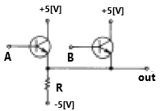
- AND
- OR
- NAND
- NOR
(정답률: 알수없음)

2. 평형 변조회로의 출력에 나타나지 않는 것은?
- 하측파대
- 상측파대
- 상하측파대
- 반송파
(정답률: 알수없음)
3. AM 변조에서 발생하는 측파대의 수는?
- 1
- 2
- 3
- 무한대
(정답률: 알수없음)
4. 다음 논리 IC 중 전력소모가 가장 적은 것은?
- TTL
- ECL
- CMOS
- DTL
(정답률: 알수없음)
5. 다음 중 그 값이 작을수록 좋은 것은?
- 증폭기 바이어스 회로의 안정계수
- 차동 증폭기의 동상신호 제거비(CMRR)
- 증폭기의 신호대 잡음비
- 정류기의 정류효율
(정답률: 알수없음)
6. Gray code 0111을 binary code로 변환하면?
- 0100
- 0110
- 0101
- 0111
(정답률: 알수없음)
7. 그림의 논리회로에서 출력 X 의 논리식은?
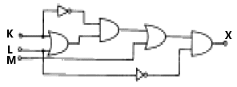
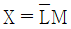
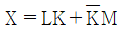
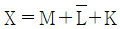
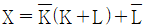
(정답률: 알수없음)
8. TTL에 비교하여 C-MOS 집적회로의 특징이 아닌 것은?
- 소비전력이 적다.
- 잡음여유도가 높다.
- 동작속도가 빠르다.
- 폭넓은 전원전압에서 동작이 가능하다.
(정답률: 알수없음)
9. 윈브리지(Wien bridge) 발진회로에 관한 설명이 틀린 것은?
- 증폭기, R 및 C로 간단히 회로를 구성할 수 있다.
- 발진 주파수가 비교적 안정적이다.
- 발진 주파수의 가변이 용이하지 않다.
- 저주파 발진기 등에 많이 쓰인다.
(정답률: 알수없음)
10. 그림과 같은 회로에서 V1 = V2 = 20[V]이면 Vo는? (단, 각 다이오드는 이상적인 특성을 갖는다.)
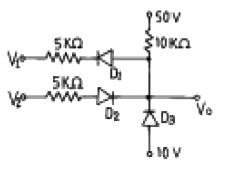
- 50[V]
- 40[V]
- 30[V]
- 20[V]
(정답률: 알수없음)
11. 다음 RL회로에서 SW를 닫는 순간 기전력이 E일 때 t초 후에 흐르는 전류(i)는?
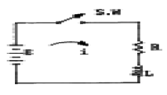
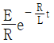
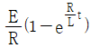
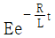
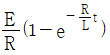
(정답률: 알수없음)
12. 변조도 50%의 진폭변조에서 반송파 평균전력이 500[㎽] 일 때 피변조파의 평균전력은 약 얼마인가?
- 523[㎽]
- 543[㎽]
- 563[㎽]
- 583[㎽]
(정답률: 알수없음)
13. 그림과 같이 구성한 회로는 어떠한 작용을 행하는가?
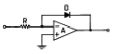
- 대수증폭
- 가산증폭
- 미분연산
- 적분연산
(정답률: 알수없음)
14. A, B 를 입력으로 하는 반가산기의 합 S 에 대한 출력 논리식으로 틀린 것은?
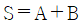
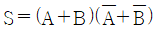
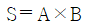
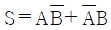
(정답률: 알수없음)
15. 회로에서 Si 다이오드 양단에 걸리는 전압 VD 는 약 몇[V] 인가?
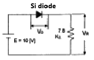
- 10.7
- 9.3
- 0.7
- 0.2
(정답률: 알수없음)
16. 다음과 같은 멀티플렉서 회로에서 제어입력 A와 B가 각 각 1일 때 출력 Y의 값은?
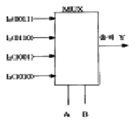
- 0011
- 0110
- 1001
- 1010
(정답률: 알수없음)
17. 크리스탈이 500[kHz]에서 공진하고 있다. 이 주파수에 대한 등가 인덕턴스가 4[H], 등가 커패시턴스가 0.0427[pF], 등가 저항이 10[㏀]이라 할 때, 이 크리스탈의 Q 값은 약 얼마인가?
- 1513
- 1457
- 1318
- 1256
(정답률: 알수없음)
18. 그림과 같은 이상적인 연산 증폭기의 입력에 단위 계단함수인 전압을 인가할 때 출력에 나타나는 전압파형은?
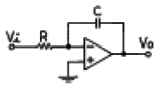
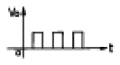
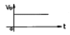
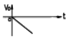
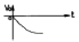
(정답률: 알수없음)
19. 궤환 증폭기의 이득(폐루프 이득)에 관한 식은? (단, A : 기본 증폭도, Af : 궤환 증폭도, β: 궤환율)
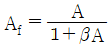
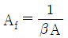
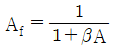
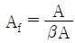
(정답률: 알수없음)
20. 그림과 같은 회로에 step전압을 인가하면 출력 전압은? (단, C는 초기 충전되어 있지 않은 상태이다.)
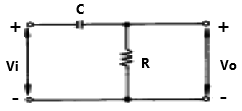
- 같은 모양의 step 전압이 나타난다.
- 아무 것도 나타나지 않는다.
- 0부터 지수적으로 증가한다.
- 처음엔 입력과 같이 변했다가 지수적으로 감소한다.
(정답률: 알수없음)
2과목: 유선통신기기
21. PCM-24방식은 24개의 음성채널을 아래의 종류 중에서 어떤 다중화 방식으로 다중화하는가?
- FDM
- TDM
- WDM
- CDM
(정답률: 알수없음)
22. 전전자교환기의 가입자 정합 기능의 종류를 약어로 정리하면 "BORSCHT"이다. 이들 중에서 외부의 과전압으로부터 내부회로를 보호하는 기능의 약어표기는?
- B
- O
- S
- T
(정답률: 알수없음)
23. 신호가 목적지까지 도달하는 동안 원래신호보다 레벨이 낮아지는데 신호의 주파수 등급에 따라 달라진다. 즉 기준주파수의 감쇄량을 기준으로 한 다른 주파수의 상대적 레벨을 무엇이라 하는가?
- 감쇄왜곡
- 위상왜곡
- 누화왜곡
- 비직선왜곡
(정답률: 알수없음)
24. 통신시스템의 신뢰성 척도로 사용될 수 없는 것은?
- 가용도(Availability)
- 고장율(Failure Rate)
- 평균고장시간(MTBF)
- MIPS(Million Instruction Per Second)
(정답률: 알수없음)
25. 회선 능률 향상 대책이 아닌 것은?
- 회선군을 소군화한다.
- 계단 결선군으로 교환선군을 구성한다.
- 이용도를 크게한다.
- 호의 접속시간을 줄이고, 동작률을 증가 시킨다.
(정답률: 알수없음)
26. 아날로그 신호를 디지털 신호로 변환하는 PCM(펄스부호변조)의 변조과정을 순서대로 열거한 것은?
- 저역필터-양자화-표본화-부호화
- 저역필터-표본화-양자화-부호화
- 표본화-양자화-저역필터-부호화
- 양자화-저역필터-표본화-부호화
(정답률: 알수없음)
27. PCM 방식으로 아나로그를 디지탈로 변화시킬 때 북미방식에서 사용하는 표본화 주파수는?
- 2 ㎑
- 4 ㎑
- 8 ㎑
- 12 ㎑
(정답률: 알수없음)
28. 전자교환기가 가지고 있는 주요기능이 아닌 것은?
- 통화우선 처리기능
- 통화량 조정기능
- 통화우회 처리기능
- 펄스재생 방출기능
(정답률: 알수없음)
29. 최번시 발생한 호수가 150호, 평균보류시간이 2분일 때 호량은?
- 135[HCS]
- 180[HCS]
- 362[HCS]
- 420[HCS]
(정답률: 알수없음)
30. TDX-10의 타임 스위치는 어느 서브시스템에 존재하는가?
- ASS
- CCS
- INS
- TCS
(정답률: 알수없음)
31. 교환기의 용량중의 하나인 통화로계 트래픽 처리능력을 결정하는데 가장 직접적인 영향을 미치는 것은?
- 제어계 구조
- 중계선 접속형태
- 스위치 규모
- 가입자형태
(정답률: 알수없음)
32. 전자교환기에서 사용하는 축척 프로그램 제어(SPC)의 설명이 맞지 않는 것은?
- 가입자에 대한 다양한 기능 부여
- 고도의 신뢰성
- 시설비의 저렴
- 중앙제어 장치의 증대
(정답률: 알수없음)
33. 탄소형 송화기의 동저항은 시간이 경과함에 따라 어떻게 되는가?
- 변함이 없다.
- 감소한다.
- 증가한다.
- 부저항상태가 된다.
(정답률: 알수없음)
34. ITU에서 권고된 신호방식중 "공통선 신호방식"이라 불리는 것은?
- R2 신호방식
- NO.5 신호방식
- NO.7 신호방식
- NO.9 신호방식
(정답률: 알수없음)
35. 다음 식중에서 잡음지수를 옳게 표현 한 것은? (단, 입력전압의 신호 Si, 입력전압의 잡음 Ni, 출력전압의 신호 So, 출력전압의 잡음 No )
- 잡음지수=(Si/Ni)/(So/No)
- 잡음지수=(So/No)/(Si/Ni)
- 잡음지수=(Si/Ni)2/(So/No)
- 잡음지수=(So/No)2/(Si/Ni)
(정답률: 알수없음)
36. 아래에 열거하는 모뎀의 루프백 시험 종류 중에서 그림과 같이 접속하여 시험하는 방법은 어느 것인가?
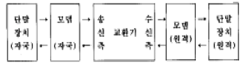
- 자국 디지털 루프백 시험
- 원격 디지털 루프백 시험
- 원격 모뎀 루프백 시험
- 회선 루프백 시험
(정답률: 알수없음)
37. TDX-10의 서브시스템 중 INS의 설명으로 맞는 것은?
- 아날로그, 디지털 가입자의 감시 및 제어기능
- S-SW와 망동기 제어 및 번호번역 기능
- 시스템의 총괄적인 유지보수 및 관리기능
- 시스템의 용도 및 실장용량에 따라 최대 60개까지 증설이 가능
(정답률: 알수없음)
38. 전화에서 2선식과 4선식을 분리,결합하는 장치는 무엇인가?
- 증폭기 (AMP)
- 3권 변성기 (HYB)
- 중계기 (REP)
- 선로여파기 (LF)
(정답률: 알수없음)
39. 전송 능률 측정기나 레벨 미터에는 일반적으로 "TEL" 단자가 있다. 이 단자에 연결하는 것은?
- 레벨 미터
- 감쇄기
- RC 발진기
- 연락용 전화기
(정답률: 알수없음)
40. 전화기의 수화기에 영구자석을 사용하는 이유는?
- 불필요한 자력의 변화를 극히 작게 하기 위해서
- 진동판의 진동을 될수 있는 한 적게 하기 위해서
- 음성전류의 제2고조파의 발생을 방지하기 위해서
- 자기변화의 증가와 음성전류의 폭을 크게하기 위해서
(정답률: 알수없음)
3과목: 전송선로개론
41. PCM 선로 중계용 재생중계기의 3R 기능이 아닌 것은?
- REGENERATION
- RETIMING
- REPEATING
- RESHAPING
(정답률: 알수없음)
42. 광파이버의 레일리(Rayleigh) 산란 손실은?
- 파장 λ의 4승에 역비례(λ-4)한다.
- 파장 λ의 4승에 비례(λ4)한다.
- 파장 λ의 2승에 역비례(λ-2)한다.
- 파장 λ의 2승에 비례(λ2)한다.
(정답률: 알수없음)
43. 전화선 배선법에 있어서 국선과 인접 멀티플선만을 각단자함에 배분하는 것으로서 일반적으로 체감식이라고도 하며 배선케이블을 국선수에 의하여 순차 체감시킬 수 있는 배선법은?
- 고정배선법
- 단독배선법
- 자유배선법
- 중복배선법
(정답률: 알수없음)
44. 특성임피던스가 50[Ω]인 전송선로의 입사전력이 500[mW]이고, 반사전력이 20[mW]로 측정되었다. 이 전송로의 전압 정재파비는?
- 0.5
- 1
- 1.5
- 3
(정답률: 알수없음)
45. 광통신용 전기→광변환 소자로서 관계 없는 것은?
- APD
- 단일모드 반도체 레이저
- LED
- Ga/As 반도체
(정답률: 알수없음)
46. 음성파형의 원신호 주파수를 300 ~ 3,400[Hz]라고 했을 때 PCM 표본화의 적합한 빈도는 얼마인가?
- 3100회
- 3400회
- 6000회
- 8000회
(정답률: 알수없음)
47. 다음 중 전송대역을 가장 넓게 잡을 수 있고, 재료 분산이 없는 광원의 발광 파장은?
- 1.6[㎛]
- 1.3[㎛]
- 1.⑤[㎛]
- 0.5[㎛]
(정답률: 알수없음)
48. 다음 중 동축 케이블의 특징이 아닌 것은?
- 고주파 누화 특성이 좋다.
- 고주파 전송 손실이 비교적 적다.
- 내압 특성이 좋다.
- 전송 손실은 주파수에 비례한다.
(정답률: 알수없음)
49. 전화용 광섬유 케이블 방식에서 사용되고 있는 광검출기는 어디에 설치되어 있는가?
- 송신측에 설치되어 있다.
- 수신측에 설치되어 있다.
- 일정한 간격으로 케이블 중간에 설치되어 있다.
- 각 중계기마다 설치되어 있다.
(정답률: 알수없음)
50. 임피던스 정합(impedance matching)이 이루어진 경우의 설명에 해당되지 않는 것은?
- 특성 임피던스가 선로의 길이에 관계없다.
- 진행파만 존재하고 반사파는 없다.
- 임피던스 정합조건은 최대전력 전송조건을 의미한다.
- 정재파비가 최대가 된다.
(정답률: 알수없음)
51. 다음 중 dBm 에 대한 설명으로 맞는 것은?
- 600[Ω]회로에 10[mW]의 전력이 공급될 때 0[dBm]으로 한다.
 이다. (단, P는 전력값)
이다. (단, P는 전력값)- 상대레벨이다.
- 증폭기의 출력이 10[W]일 때 40[dBm]이 된다.
(정답률: 알수없음)
52. 다음 중 광섬유 통신에 사용되는 광의 파장은 어느 정도인가?
- 가시광선으로서 파장 0.63[㎛]
- 자외선 보다 짧은 0.2[㎛] 파장대
- 적외선 보다 긴 1.3[㎛] 파장대
- 파장 50[㎛] 내외
(정답률: 알수없음)
53. 광통신 다중화방식 중 WDM은 어느 방식인가?
- 시분할 다중
- 주파수분할 다중
- 공간분할 다중
- 파장분할 다중
(정답률: 알수없음)
54. 동축케이블에서 반사손실의 주 발생원인은?
- 케이블 내부구조 불균일
- 케이블의 접속점
- 케이블의 피목의 종류
- 내부도체와 외부도체간의 절연불균일
(정답률: 알수없음)
55. 다음 설명 중 PCM방식에서 양자화란?
- 표본화(SAMPLING)과정
- PAM부호를 구분화하여 대표값으로 고쳐 표현하는 것
- 신호진폭의 대표값을 추출하여 선정하는 것
- 신호의 진폭을 2진수로 바꾸는 것
(정답률: 알수없음)
56. CATV에서 1차측의 신호전력의 일부를 2차측에 분기시키는 기기는?
- 분배기
- 분기기
- 방향성 결합기
- 직렬 유니트
(정답률: 알수없음)
57. 코어의 굴절률이 1.4 클래딩의 굴절률이 1.2 인 광섬유 케이블의 개구수 NA는 약 얼마인가?
- NA = 0.38
- NA = 0.53
- NA = 0.72
- NA = 0.95
(정답률: 알수없음)
58. PCM통신에서 압축기를 사용하는 목적은 무엇을 조정하기 위함인가?
- 주파수
- 통신속도
- 진폭
- 위상
(정답률: 알수없음)
59. 통신 케이블에 있어서 누화의 경감법이 아닌 것은?
- 반점 및 사치
- 교차
- 시험접속
- 장하 선륜 삽입
(정답률: 알수없음)
60. 위상정수가 π/4[rad/m]인 선로의 10[MHz]에 대한 전파의 속도는?
- 7×107[m/sec]
- 8×107[m/sec]
- 7×108[m/sec]
- 8×108[m/sec]
(정답률: 알수없음)
4과목: 전자계산기일반 및 선로설비기준
61. 고급언어를 기계어로 바꾸어 주는 역할을 하는 것은?
- 운영체제(OS)
- 어셈블러
- 컴파일러
- 목적프로그램
(정답률: 알수없음)
62. 다음 중 정보의 개념을 하위 개념에서 부터 상위 개념으로 나열한 것은?
- 필드(Field) → 레코드(Record) → 파일(File) → 문자(Character)
- 레코드(Record) → 파일(File) → 필드(Field) → 문자(Character)
- 문자(Character) →필드(Field) → 레코드(Record) → 파일(File)
- 파일(File) → 문자(Character) → 필드(Field) → 레코드(Record)
(정답률: 알수없음)
63. 프로그램 카운터가 명령 번지 부분과 더해져서 유효 번지가 결정되는 주소지정 방식은?
- 상대 번지 모드
- 간접 번지 모드
- 인덱스 번지 모드
- 베이스 레지스터 번지 모드
(정답률: 알수없음)
64. 기억장치의 액세스타임(Access time)표현이다. 1[㎲]는 몇 초인가?
- 10-3
- 10-6
- 10-9
- 10-12
(정답률: 알수없음)
65. 마이크로 프로세서에서 연산처리 한 후 연산 결과의 상태를 표시하는 레지스터는?
- 범용 레지스터
- 플레그 레지스터
- 콘트롤 레지스터
- 인덱스 레지스터
(정답률: 알수없음)
66. 다음 선형리스트 중에서 데이터의 입력순서와 출력순서가 바뀌는 것은?
- queue
- stack
- FIFO
- circular queue
(정답률: 알수없음)
67. 10진수 738에 대한 BCD 코드(binary coded decimal)는?
- 0111 0011 1000
- 1110 0011 1000
- 1010 0111 0011
- 0010 1110 0010
(정답률: 알수없음)
68. IRG(Inter Record Gap)로 인한 기억공간의 낭비를 줄이기 위하여 Physical Record 를 만드는데 필요한 것은?
- Paging
- Buffering
- Mapping
- Blocking
(정답률: 알수없음)
69. 오퍼레이팅 시스템의 성능평가 중 데이터 처리를 위하여 시스템이 필요하게 되었을 때 시스템을 어느 정도 빨리 사용할 수 있는가를 나타내는 것은?
- 처리능력
- 응답시간
- 사용가능도
- 신뢰도
(정답률: 알수없음)
70. 인쇄물이나 이미지에 빛을 투시해 반사되는 광선의 양적차이인 강약을 검출하여 문자를 인식, 판독하는 장치는?
- Scanner
- ORT
- OCR
- MICR
(정답률: 알수없음)
71. 다음 중 정보통신공사업법의 제정 목적은?
- 정보통신공사의 적정한 시공을 하기 위함이다.
- 전기통신기본법에 의하여 제정하여야 하기 때문이다.
- 국민이면 누구나 전기통신설비를 설치하여 사용할 수 있게 하기 위함이다.
- 헌법에 보장되어 있는 재산권을 보호하기 위함이다.
(정답률: 알수없음)
72. 건전한 정보문화를 창달하고 전기통신의 올바른 이용환경을 조성하기 위하여 설치한 기구는?
- 한국정보문화센타
- 통신위원회
- 정보통신정책심의위원회
- 정보통신윤리위원회
(정답률: 알수없음)
73. 정보의 안전한 유통을 위한 정보보호에 필요한 시책을 효율적으로 추진하기 위하여 설립된 기관은?
- 정보보호관리원
- 한국정보보호진흥원
- 정보통신기술원
- 정보통신망보호원
(정답률: 알수없음)
74. 전기통신사업에 관한 설명에서 적합하지 않은 것은?
- 전기통신사업은 기간통신사업, 별정통신사업, 부가통신사업으로 구분한다.
- 기간통신사업을 경영하고자 하는 자는 정보통신부장관의 허가를 받아야 한다.
- 별정통신사업을 경영하고자 하는 자는 정보통신부장관의 허가를 받아야 한다.
- 부가통신사업을 경영하고자 하는 자는 정보통신부장관에게 신고하여야 한다.
(정답률: 알수없음)
75. 다음 중 정보통신부장관의 승인을 얻어야 하는 것은?
- 기간통신사업자는 중요한 전기통신 설비를 설치 또는 변경하고자 하는 경우
- 기간통신사업자 상호간에 전기통신 설비의 제공에 관한 협정을 체결하고자 하는 경우
- 새로운 전기통신 기술방식에 의하여 최초로 전기통신설비를 설치할 경우
- 기간통신사업자로부터 전기통신 회선 설비를 임차하여 부가통신 역무를 제공하는 사업자
(정답률: 알수없음)
76. 전화교환설비를 보호하기 위하여 행하는 보안용 접지에서 수용회선이 101 회선인 경우의 접지저항은?
- 10[Ω]이하
- 50[Ω]이하
- 300[Ω]이하
- 300[Ω]이상
(정답률: 알수없음)
77. 다른 전기통신설비를 접속하지 아니한 상태에서의 선로설비의 회선당 평가잡음전압의 허용치는?
- 0.5[mV]이하
- 1.0[mV]이하
- 1.5[mV]이하
- 2.0[mV]이하
(정답률: 알수없음)
78. 전기통신역무의 이용약관에 대한 설명으로 적합하지 않은 것은?
- 이용약관이란 통신사업자가 제공하고자 하는 전기통신역무에 관하여 요금 및 이용조건을 정한 것이다.
- 이용약관은 정보통신부장관의 인가를 받아야 한다.
- 이용약관은 공시를 하여야 하고, 이용자가 열람할 수 있도록 비치하여야 한다.
- 정보통신부장관은 이용약관이 현저히 부당하여 공공이익의 증진에 지장이 있다고 인정되는 경우 변경을 명할 수 있다.
(정답률: 알수없음)
79. TV 방송 등에서 사용되는 UHF대 주파수 대역은?
- 3[㎒]∼30[㎒]
- 30[㎒]∼300[㎒]
- 300[㎒]∼3[㎓]
- 3[㎓]∼30[㎓]
(정답률: 알수없음)
80. 다음 중 종합음량정격에 대한 설명으로 올바른 것은?
- 송화음량정격과 접속음량정격을 더한 것을 말한다.
- 송화음량정격과 수화음량정격을 더한 것을 말한다.
- 접속음량정격 및 수화음량정격을 더한 것을 말한다.
- 송화음량정격과 접속음량정격 및 수화음량정격을 모두 더한 것을 말한다.
(정답률: 알수없음)